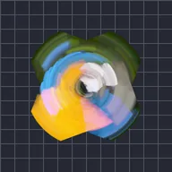

สปินสตรีค

สร้างเส้นแสงโค้งโดยหมุนสำเนาของเลเยอร์รอบจุดหนึ่งแล้วผสมส่วนที่ทับซ้อนกัน R, G, B และ A เลือกได้ทีละช่องว่าจะเก็บค่าต่ำสุด สูงสุด ค่าเฉลี่ย หรือไม่แตะช่องนั้น
การตั้งค่า
| การตั้งค่า | ประเภท | ช่วงค่า | ค่าเริ่มต้น |
|---|---|---|---|
| จุดศูนย์กลาง | จุด (X, Y) | -1 ถึง 2 | 0.5, 0.5 |
| การกวาด | มุม | 0° ถึง 360° | 5° |
| อัลฟา | ตัวเลข | 0% ถึง 100% | 100% |
| ไบแอส | ตัวเลข | -100% ถึง 100% | 0% |
| R | ตัวเลือก | ต่ำสุด, สูงสุด, เฉลี่ย, ปิด | สูงสุด |
| G | ตัวเลือก | ต่ำสุด, สูงสุด, เฉลี่ย, ปิด | สูงสุด |
| B | ตัวเลือก | ต่ำสุด, สูงสุด, เฉลี่ย, ปิด | สูงสุด |
| A | ตัวเลือก | ต่ำสุด, สูงสุด, เฉลี่ย, ปิด | สูงสุด |